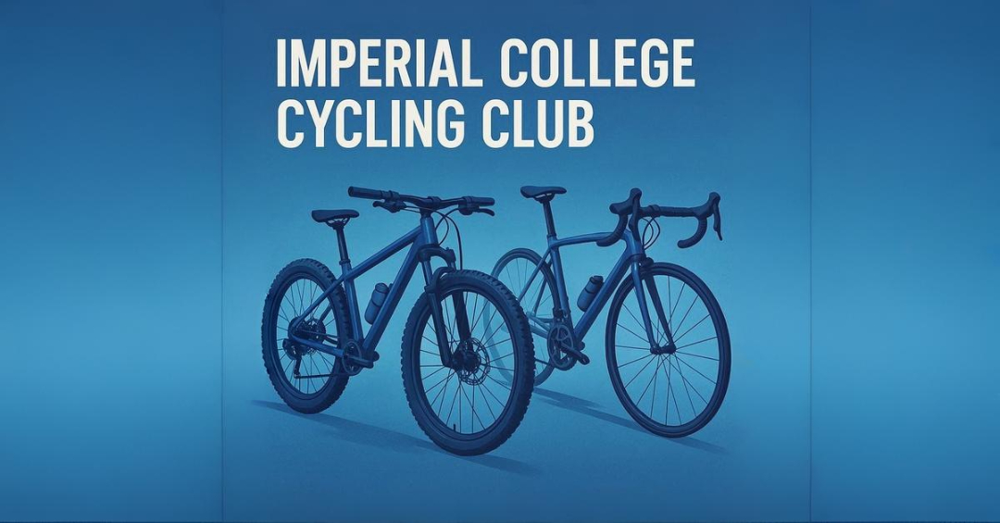

About the New ICC Website
June 9, 2025 · by Frederik Beck
The new Imperial College Cycling Club website started as a prototype — a test of how quickly a modern website could be built using templates and tools like ChatGPT. What began as a technical experiment soon turned into a real club project, as the idea sparked interest and support within the cycling community.
While initially a personal project, the website soon developed into a proper design and communication platform for the club. Beyond technical implementation, the work involved article writing, visual design, and some deeper thought about what role a club website should play — both functionally and as a reflection of club culture.
Modern cycling culture is evolving, with strong influences from design, fashion, and lifestyle. This shift has been embraced by brands like Rapha, MAAP, and Pas Normal Studios. Inspired by that, the ICC website was designed not just to be functional but to visually align with contemporary cycling aesthetics. The goal is to help ICC present itself as an open, modern, and active part of Imperial’s student life.
Club culture plays an important role at universities like Imperial. It helps build community, enriches student life, and offers continuity between generations of students. That’s why a strong online presence — from the website to social media — can make a real difference. It helps students discover the club, understand what it offers, and feel welcome.
While the site is live, there's still potential for the club to grow — in terms of activity, communication, and outreach. Below are several suggestions to support this development.
Suggestions for Developing a New Chapter of ICC
1. Clearer Communication of What the Club Offers
More transparent and accessible information about rides, training opportunities, and general
support services like Wattbikes, gym access, or coaching would help attract and retain members.
2. Cross-Club Endurance Sports Support
Shared initiatives across endurance sports (e.g. supervised gym sessions, seminars on training
methodology and recovery) could offer more value and create synergies between clubs.
3. Better Access to Indoor Training
Easier and club-prioritised access to Wattbikes at Ethos, and ideally two club-owned Wattbikes
stored in the Union building. Also: bike cleaning, storage, and repair options could improve the
overall infrastructure.
4. Broader Appeal Through Modern Cycling Trends
The club could reflect current cycling trends by promoting formats like indoor cycling, gravel,
bikepacking, and urban commuting. These formats attract a more diverse and inclusive membership
base.
5. Tiered Membership Model
A low-barrier entry membership — especially free or symbolic for casual cyclists — can help the
club grow and bring in people who may later get involved more deeply or compete.
6. Club-Owned MTB
A club-owned hardtail MTB would give newcomers access to the sport. It would also support
students who can’t afford or store a bike in London. A pilot purchase could cost ~£700 and be
maintained by members with a small usage fee.
7. Alumni Strategy
Many students only fully engage with cycling after graduation. A small alumni network could
enrich the club with experience, mentoring, and even funding opportunities. It would also keep
former students connected to the ICC community.


{kind=link}